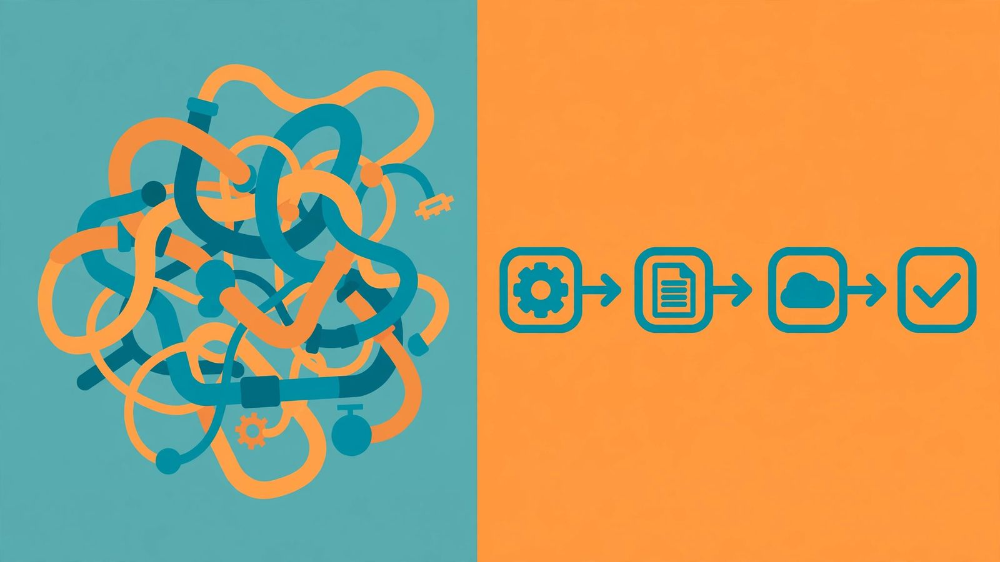

My sales team used to complain about Odoo’s CRM pipeline setup. It was too complicated. They’d build it with 20 steps, then stop using it. Why? Because it didn’t match what they actually did. Here’s what actually works.
Salespeople don’t follow pipeline stages that don’t match their daily work. If your pipeline forces them to do extra steps, they skip it. Odoo’s strength is simplicity. Build it short. 3 to 5 steps max. Visual. Tied to real tasks like calls or emails. That’s what gets used.
I’ve seen teams try to make Odoo pipelines complex. They add stages like “Qualified Lead,” “Proposal Sent,” “Meeting Scheduled.” But sales reps don’t care about those terms. They care about what they do next. If the pipeline says, “After this email, schedule a call,” that’s what they follow. If it says, “After this email, complete 10 steps,” they ignore it.
Here is what each stage actually means in Odoo.
New contact. Someone filled out your form, or you met them somewhere. They go in the first column. No research project. Name, company, how you met them. That is it.
Contacted via email. You sent the first real email. Not a drip campaign. A human email that references something specific. Log it in Odoo with one click so the activity is tracked. Now they sit in column two.
Scheduled call. They replied and you have a time on the calendar. This is the stage most teams skip, and it is the one that matters most. A pipeline full of contacted leads and nothing scheduled is a wish list, not a pipeline.
Closed deal. They signed. Move the card. Done.
Four columns. You can see the whole business on one screen.
Deals stall. That is normal. What is not normal is letting a card rot in a stage for three weeks while nobody notices. Odoo lets you put an activity with a due date on every card. Call Friday. Follow up Tuesday. When the date passes, the card turns red. You cannot miss it. That one feature does more for close rates than any dashboard I have seen.
Here’s the real pipeline that works:
- New contact
- Contacted via email
- Scheduled call
- Closed deal
No more. Sales reps use this. It’s short. It’s visual. It’s what they do.
Odoo’s pipeline setup is different from SAP Business One. SAP is built for big enterprises. It has complex workflows. Sales teams there use it because they have dedicated staff. But for small teams like mine, Odoo’s simplicity wins. SAP’s pipeline setup is too heavy. It’s not what salespeople want.
Why do sales teams ignore pipelines? Because they’re not part of their work. The pipeline should be a tool, not a chore. Odoo’s pipeline is a tool that fits into their day. It doesn’t add steps. It helps them move from contact to close.
In Odoo, this takes about ten minutes. Open CRM, open the pipeline kanban view, delete the stages you do not need, rename what is left. Drag a card from one column to the next when things move. That is the whole system. If a rep cannot figure it out in sixty seconds, you built it wrong.
The mistakes I see over and over: required fields on every stage (reps will type garbage just to move the card), stages named after internal jargon nobody outside sales understands, and my favorite, the nurture stage where dead leads go to be forgotten. Kill all three.
Here’s how to build it:
- Start with a basic pipeline: New contact → Contacted → Scheduled → Closed
- Add steps only when needed. For example, if you need to track demos, add a “Demo Scheduled” step.
- Keep it visual. Use Odoo’s interface to show the pipeline clearly. No text-heavy descriptions.
Salespeople don’t like to type. They want to see what’s next. If the pipeline shows a simple flow, they follow it. If it’s confusing, they skip it. 
I tried this with my team. We cut the pipeline from 20 steps to 4. Sales reps used it immediately. They didn’t need training. They just followed what they did.
SAP Business One is great for big companies. But for small teams, Odoo’s simplicity is better. The pipeline setup isn’t about theory. It’s about what works in real life.
Frequently asked questions
Why do sales teams ignore the pipeline setup?
Because it’s too many steps. Sales reps do things in real life: calls, emails, demos, not CRM stages. If the pipeline forces them to do extra steps, they skip it.
How does Odoo compare to SAP Business One?
SAP Business One is built for big enterprises with complex workflows. Odoo is simpler but needs careful setup. Sales teams prefer Odoo’s flexibility over SAP’s rigid structure.
Can I use Odoo without a custom pipeline?
Yes. Start with a basic pipeline: Lead → Contact → Opportunity → Close. Add more steps only when needed. Salespeople use what they understand.
This is the pipeline that gets used. It’s short. It’s visual. It’s real.